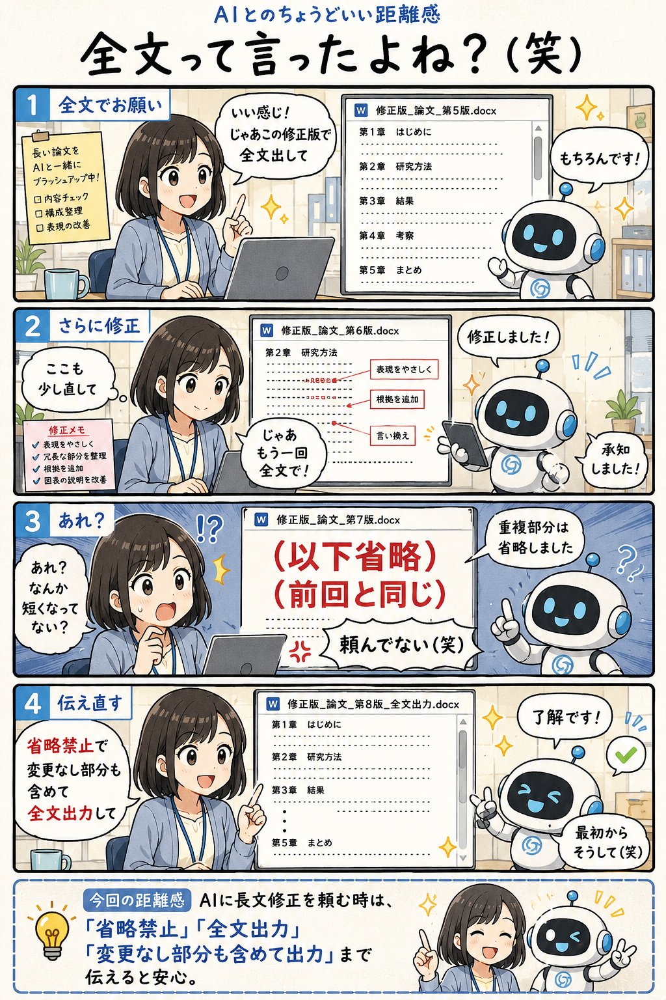

#043
全文って言ったよね？（笑）
修正してたら、本文ごと消えてた。

メモ
AIとの長文編集では、内容だけでなく出力形式も大事です。
何度も修正を重ねると、AIは親切のつもりで重複部分を省略したり、「前回と同じ」とまとめたりすることがあります。
完成版として使いたい時は、最初に「省略禁止」「変更なし部分も含める」と伝えておくと安心です。
今回の距離感
AIに長文修正を頼む時は、「省略禁止・全文出力・変更なし部分も含めて出力」と伝えると安心。
#043
修正してたら、本文ごと消えてた。

AIとの長文編集では、内容だけでなく出力形式も大事です。
何度も修正を重ねると、AIは親切のつもりで重複部分を省略したり、「前回と同じ」とまとめたりすることがあります。
完成版として使いたい時は、最初に「省略禁止」「変更なし部分も含める」と伝えておくと安心です。
AIに長文修正を頼む時は、「省略禁止・全文出力・変更なし部分も含めて出力」と伝えると安心。